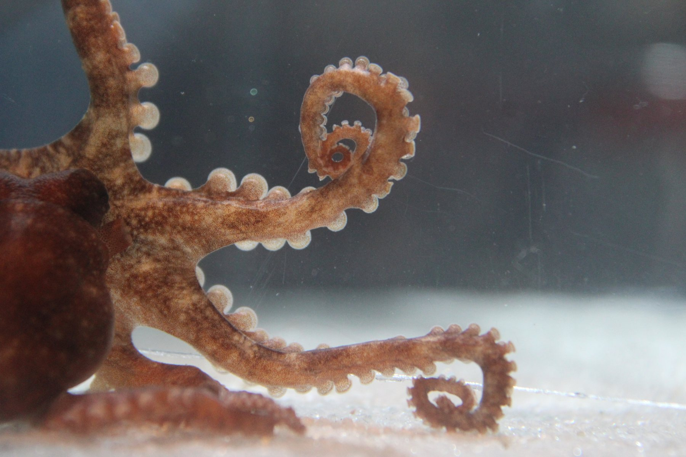
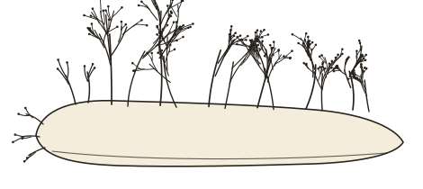
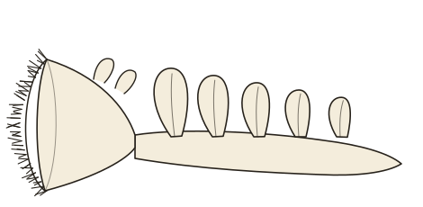
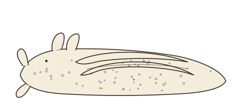
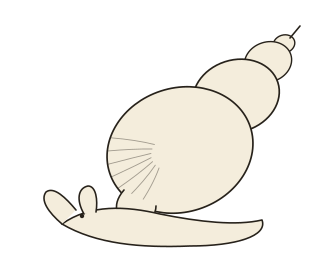
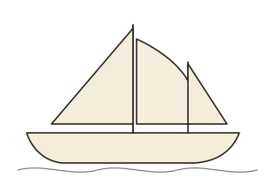

Horizons
The cephalopod program on the research page is the work I will start with. This page is where it goes next, and what else I bring with me.

Smaller circuits: the hypothesis predicts its own outgroup
If distributed, redundant organization buffers perturbation, then a circuit with almost no redundancy should fail abruptly, and at a nameable point. Gastropod molluscs offer exactly that test, on the same stressors, readouts, and rig as the cephalopod work, in nervous systems where individual neurons can be identified from animal to animal and recorded one by one. I am not new to them: during my doctoral work I recorded from identified Aplysia neurons and mapped molecular diversity in molluscan memory centers, and the same methods carry over.
Dendronotus iris
A predatory nudibranch that swims on a central pattern generator of two interneuron pairs, four cells in all, among the simplest locomotor oscillators described. Every element is accessible in one preparation, so under thermal or CO₂ load, failure can be attributed to a single named cell and separated into loss of intrinsic excitability versus synaptic failure.

Melibe leonina
The hooded nudibranch produces the same left-right flexion swimming from an eight-neuron circuit built from the same neuron families as Dendronotus, wired differently. Comparing the two asks whether adding neurons adds resilience: the cephalopod hypothesis at its smallest scale.

Aplysia californica
The sea hare's giant identified neurons are where much of cellular learning and memory was worked out. I recorded from them and mapped their molecular identities during my Ph.D., and its well-characterized circuits are the natural place to ask how a stressed neuron's transcriptome changes its physiology, cell by cell.

Lymnaea stagnalis
The great pond snail has a three-neuron respiratory rhythm generator and a deep literature on identified neurons and learning. It is inexpensive, easy to culture on a bench, and lives in ponds whose temperature and chemistry swing more than any coast: a freshwater extension of the same question, and a course-friendly one.

Beyond the animals, the crossed design extends to salinity, which shifts ion transport and synaptic reliability through transporter families the program already tracks; to heritability of resilience through family-structured crosses in the squid; and to chromatophore motor circuits, where camouflage precision is a cephalopod-native readout of circuit health.
Ocean Genome Atlas Project
Since 2020 I have been Director of Scientific Operations for the Ocean Genome Atlas Project, a UN Decade of Ocean Science-designated nonprofit mapping global marine biodiversity at single-cell resolution. The project deploys mobile genomic laboratories aboard sailing research vessels, and I oversee its scientific strategy and operations: field-based molecular surveys, protocols for the mobile labs, coordination across international taxonomic teams, grant development, and institutional partnerships.
It is also a training pipeline. Expedition science, from specimen provenance and benefit-sharing obligations for genetic resources collected in other countries' waters to who is named on the resulting paper, is the kind of decision I can teach as a decision, and it gives students a route into biodiversity genomics that no single campus laboratory can offer.

Public science
Nervous systems are wonderful material for public engagement. I was selected for the Kavli Foundation's Science and Society Sparks Program (November to December 2026), training in public engagement and science-society communication, and I have built K-12 and adult-learner outreach curricula in biodiversity, genetics, and marine science across Florida in collaboration with the University of Florida and SeaKeepers. I have given public talks at the Monterey Bay Aquarium and at TONMOCON, the cephalopod enthusiasts' conference, on how complex brains evolved in cephalopods.
A unit on how nervous systems handle environmental change, developed with local school students taking part, is the outreach project I would most like to build in my first two years on a faculty.